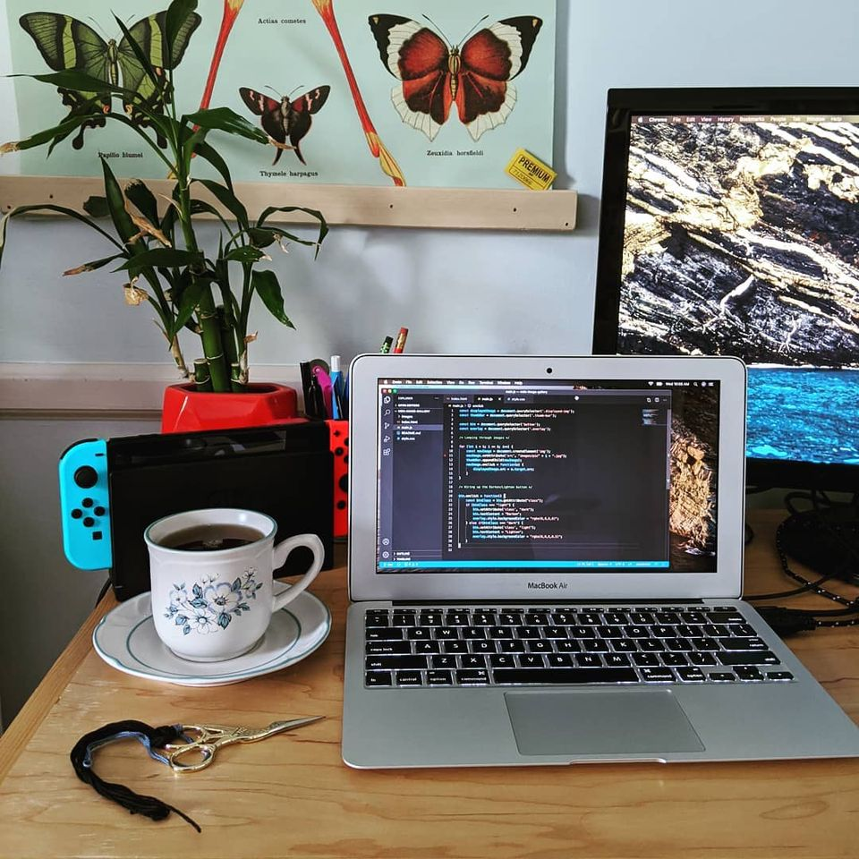

I found this week to be very challenging. As I type this, I am still not done with my last project and I did not manage to complete any stretch goals. I’m not really sure that I can pinpoint what in particular held me back this week. I’m sure it was a lot of small factors, like getting used to a new environment, a long commute, and a brand new sleep schedule. But it also feels like everything I did took an excruciatingly long time. I feel like my brain is this loose, saggy muscle that hasn’t been used in a long time and has atrophied. Specifically, I struggled the most with the mind reader project.
At this point the thing I would like to learn more about is the practical applications of javascript. I feel like there are bits and pieces of it that I know and am comfortable with, but I am still struggling with connecting those pieces together to make something logical and cohesive. I don’t think there’s anything I can really do about this other that to simply write more code? I also like the idea of JSON, but am still a little foggy on specifics of how to use it, like how to make sure it’s linked correctly. As for data structures, I feel kind of okay with arrays and objects and how to access info from them and add and remove things. Strings on the other hand are the bane of my existence.
I felt pretty okay with using bootstrap and atomic design this week. I’m not sure that there’s anything specifically I would like to know more about. I feel pretty comfortable with basic design elements, and it feels like kind of a fluid process to me. A lot of moving things around until they look the most pretty. I found bootstrap to be a little bit clunky to use at times, but I’m sure the more I use it the more comfortable I will become.
Week Four
September 18, 2020
I can’t believe I’m at the end of week four! I am grateful for having had this grace period to sort of ease myself into the flow of things, but if I’m being perfectly honest, I am really ready to get the heck out of my house.
I would say that over all, I enjoyed the topics that were covered in pre work. A lot of things were review for me, but I learned some new things as well. I was intimidated by some of the new things at first, for instance, getting used to navigating a Mac OS, and using MAMP and Github. But now I feel like I’m at a place where I definitely feel more comfortable. Another big things for me was filling in the gaps in knowledge that I had. I have studied JS quite a bit on my own, but a lot of the things I was learning seemed abstract. For instance, I knew how to add and remove things from an array, but I had no context. Like, this is cool and all, but when would I use this and why? I have enjoyed working on practical projects that show me how to make that connection. No more writing useless code in a vacuum, but seeing how it translates to a real world application.
One of the complaints for me about the pre work period was the fact that it is done remotely. It was nice to have access to the slack channel and knowing that I had the option to ask for help via zoom, but I’ve been learning on my own for so long that I feel like my brain is wired to do everything by myself. I am much more likely to ask for help if there is a person physically nearby to ask. But that’s more on me than anything. My only other real dislike about pre work was the amount of reading. It was all good information, but there was a lot of it. I did feel a little bogged down by it at times.
But all in all this was a good week. The clock and timer projects were definitely tricky. I got stuck several times, but Google and the Mozilla docs were definitely my friends. I also looked at some projects that people had posted on code pen. I made sure though that I didn’t just copy and paste, especially since a lot of them included code that didn’t apply to what I was specifically wanting to do. But it definitely helped seeing different approaches to the same idea, and slowly breaking down the logic until I understood how it works and was able to apply it to my own code.

Week three
Week three complete! Last week I felt very on top of my work load, unfortunately this week was a little more chaotic. Due to the long weekend I felt like I was lagging from the beginning. I also felt bogged down by the small mountain of reading, but managed to push through.
This week was a little bit of a mixed bag on how I felt about the material. Some of it was review, but there were also a few new concepts I learned about. Before this bootcamp I had used quite a bit of HTML, CSS, and JavaScript. But I never really understood how deep you can get into CSS. The sheer amount of different ways you can select things in an HTML document is very overwhelming. JavaScript was similar for me. I am pretty comfortable with a couple of key concepts that I have practiced a lot in the past. Loops for example. I love me a good for loop. I still find my self getting overwhelmed, however, when I try to put multiple concepts together, like when a function starts to get more and more layers, and when the variables add up. I start to get a little nervous and sweaty.
As for blog updates I played around a bit with adding a navbar at the top. I did cheat slightly. I copied it from a portfolio I put together when I was working through the free code camp curriculum. So… It is code that I wrote, I just wrote it over a year ago. I did have to tweak it to better fit this new blog situation. I also had fun playing with gradients and box shadow. I added some links new pages, now all I have to do is figure out some content to put on those pages.
Week two
I made it through week two of code camp! Hooray! I feel like this week was much less overwhelming. Here’s to hoping I can keep up the pace. I was actually a little bit ahead of schedule, which you would think would be a good thing, but instead it just made me panic and feel like I must’ve forgotten something. I will admit, I was kind of dreading the pseudo coding assignment this week, but as I got into it, I found myself enjoying it. I was reminded of the saying, “how do you eat an elephant?”. Simple answer, one piece at a time.
I decided to write pseudo code for my computerized sewing machine. I think it helped to choose an object with a very simple computer that I am already familiar with. Even still, it was still quite a challenge. It was very intimidating to see it as “the whole elephant”, but by taking it one piece at a time I was able to get through it. The hardest part was figuring out one piece of the puzzle, only to realize that in order for that piece to make sense, you need three other pieces to back it up. Or not being able to find a piece that you need, only to realize it was in front of you the whole time. You just gave it a stupid name.
I am sure the more that I pseudo code, the more comfortable I will become with it. I think one of my struggles in the past with coding, has been getting too wrapped up in syntax and method, but having no idea how it applies to the big picture. I am excited to get better at pseudo code to help me better visualize the big picture.
My first week of bootcamp went about how I expected it too. There has certainly been a lot of new information to absorb. Like, seriously, a lot of information. It has been a bit overwhelming but I at least feel more knowledgeable than I did at the beginning of the week. So far my biggest struggle as been with using Git and GitHub. Although I’m sure the more I use it, to more sense it will make to me. I actually had to set up the files for this blog twice, because I accidentally overrode my first index file with an older version. I didn’t know what to do so I just deleted everything and started over, but I did feel more confident setting it up the second time. I am excited to learn more about Git and GitHub, since I am sure we will be using it a lot.